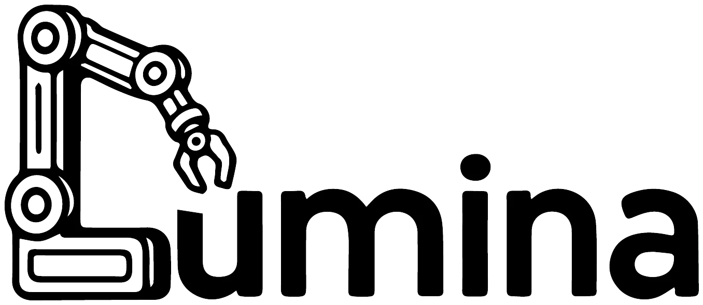

我的入门指南
刚进大学，你可能还不知道这几年想做什么。听说要争取保研，也听说大家在打比赛、进实验室，但这些事情和自己的未来有什么关系，为什么要做科研，可能还没有想清楚。
也可能你已经想开始了。我们当时也会问：大家怎么已经进组了，我连 C 都没学过；看了不少课，接下来到底能做什么；想联系一位老师，又不知道发出去之后会发生什么。
这份指南面向刚进入大学、想了解 AI 和科研的同学。这里有我们对大学选择与科研入门的回答，也整理了入门项目、各方向的代表论文、课程和工具。联系老师、第一次进组、实验失败，以及和同龄人比较时的焦虑，也在其中。
写在前面
写给刚进大学的你
大学里有哪些选择，自己想往哪里走？我从刚入学时的迷茫讲起，聊成绩、科研，也聊认识的人和科研之外的生活。
How to 入门科研
科研具体在做什么，为什么值得尝试？从找方向、联系老师，到读论文、做实验和投稿，也聊基础不够、进度落后和实验失败时怎么办。
AI 编年史
从达特茅斯会议到语言模型、生成、机器人与科学发现，看关键论文如何改变研究，又如何走到一起。
开始学习 AI
第一个 AI 项目，从哪里开始？
训练一个识别手写数字的模型，或者让模型在自己拍的照片里框出人和车。从 MNIST、YOLO 开始，走一遍运行、训练和修改代码的过程；也有 Agent 和机器人的入门项目。
AI 的不同方向，都在研究什么？
语言模型、智能体、视觉、多模态、生成、强化学习、世界模型、具身和系统。每个方向先讲一个具体问题，再接论文、讲解和可以尝试的项目。
基础怎么学，需要学到哪里？
Python、数学、ML/DL、计算机和模型架构。把卡住的概念补上，再回到你的项目里看看它是怎么用的。
做研究时会遇到的问题
第一篇论文怎么读，实验结果怎么看，第一次联系老师写些什么？这里按研究过程整理方法和工具，遇到具体问题时可以回来查。
经历、生活与眼界
经历、焚诀与走过的弯路
从大一回忆到第一次拒稿，也读读其他人的经历和判断。
怎么好好生活
成绩、科研、朋友、爱好都在大学里。这里从我们自己的经历聊起。
Lookout：研究者和实验室最近在做什么？
从一项让你好奇的工作出发，认识做它的人和实验室，顺着文章、代码、讨论继续看。
研究社区与知识分享
OpenEnvision
OpenEnvision（OE）是连接学术界与产业界的开放 AI 研究社区，关注世界模型、多模态、视觉与具身智能，也通过整理博客、访谈和课程，为社区分享研究知识。
- BlogrXiv：AI 研究博客与技术文章：汇集研究博客、实验室文章和技术笔记，可以按方向找机制解释、工程经验与科研方法，再进入作者原文。
- ScholarTube：AI 访谈、播客与课程：收集研究者长访谈、视频播客、完整课程与学术报告，覆盖 Agent、世界模型、视觉、机器人及科研方法，链接到原始视频。
也欢迎向 BlogrXiv 和 ScholarTube 推荐值得分享的文章与视频。

LuminaLumina关注具身智能的研究、开源项目与社区交流。想系统了解这个方向，可以读具身智能指南；想听研究者讲正在做的工作，可以从官网的 Talks、具身观察和社区活动进入。
资料索引
资料总索引收齐课程、paper list、作者博客、LessWrong、研究团队与问答。已经有具体问题时，可以直接搜索李沐、RoPE、Scaling Ladder、联系老师等关键词。